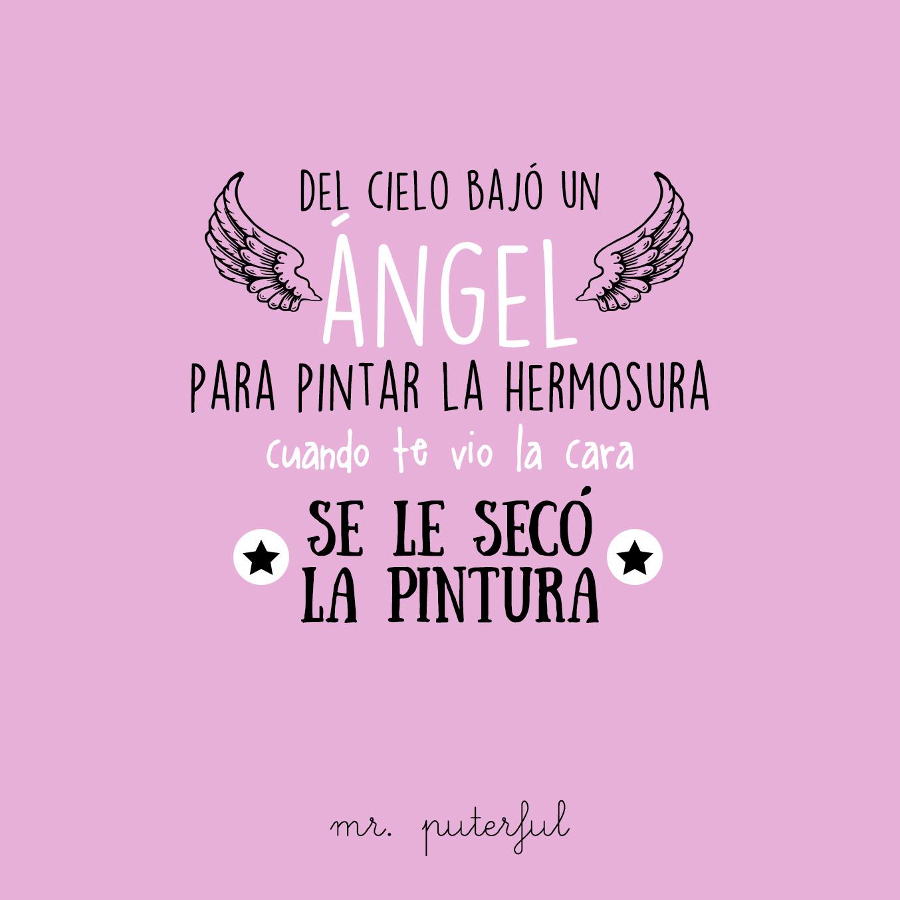
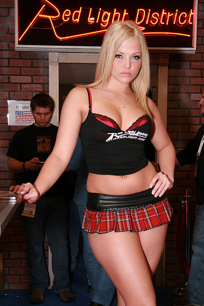

Photo gallery
- PAQUETE 400,000 LIKES PÁGINA DE FANS - Likes Reales
‚ÄúAficionados de los Mets, les debo una explicaci√≥n y una disculpa‚Äù, expres√≥ Bauer por medio de Twitter. ‚ÄúMi intenci√≥n nunca fue enga√±ar a su fanaticada, ni bromear de ninguna manera‚Äù. El viernes, un enlace para mercanc√≠a de los Mets fue puesto en la página de Instagram de Bauer, y una página para ganar una gorra del equipo firmada por Bauer fue publicada en su portal ... - Página de fans ‚Äî SentimientosDeMierdaüíî
El pasado 27 de junio, después de que la Audiencia de Navarra decretara libertad provisional bajo fianza de 6.000 euros para los cinco miembros de La Manada no sin las críticas de buena parte de la población, se creaba en Facebook la página oficial de El Prenda, llamada "Club De Fans De José Ángel Prenda". - Club Seat Exeo - Página de fans y propietarios
Por lo tanto, si tu publicación es relevante para los fans de esa página enlazada puedes conseguir que sea compartida y, con ello, atraer más fans para tu propia página. Las finalidades de enlazar a otras páginas de Facebook. Existen 2 finalidades clave por las que enlazar a otras páginas de Facebook en tu muro es algo interesante: - Página de fans
Una vez que consigues 100 fans, no puedes cambiar el nombre de tu página, así es que asegúrate de que lo elegiste sabiamente desde el principio. El nombre de tu marca es el título ideal para ... - López Espí
Página de fans. 1,5 millones de valoraciones 277 000 valoraciones ¬øVes? La aplicaci√≥n es perfecta para eso. Suena genial Nah, no me interesa. Página de fans ig: gatitosentimental// 2da cuenta tumblr: @desastresuperior üêæüçí ... vendo esta cuenta de 15.6k seguidores!!!!! consulten nomaaas en mi otra cuenta ... - ¬øC√≥mo crear una página de fans facebook? - Sistema TDC
Página de fans ‚Äî SentimientosDeMierdaüíî ... Yo personalmente no estoy para aguantar berrinches de personas que no saben madurar, uno da el intento y no se aprecia, yo no soy adivina y no estoy para el webeo de nadie juju. 332 notas. Abrir en la aplicaci√≥n; Facebook; Enviar a Twitter; - Club Chevrolet Cruze - Página de fans y propietarios
Página de fans vs. Página que generan fans. Como figura pública o celebridad, corres el riesgo de tener muchas imitaciones o perfiles sociales falsos. Al usar una Página de fans, puedes verificar tu cuenta. Una vez que la hayas verificado, una insignia azul aparecerá al lado del nombre de tu Página. - PAQUETE 7,000 LIKES PÁGINA DE FANS - Likes Reales
¿Por qué crear un página de fans en Facebook? Aumenta el tráfico a tu página web. Facebook es la red social más utilizada, es por eso que muchos usuarios utilizan esta red para encontrar información de una marca o empresa, es por eso que para aumentar el tráfico se debe tener una buena estrategia de contenido, ya que así tendrás mayor interacción y visitas. - Cómo Convertir mi Perfil de Facebook en una Página Fan ...
We would like to show you a description here but the site won’t allow us. - 5 pasos para crear tu Página de Fans en Facebook
Una página de Facebook, también conocida como página de fans, es una sencilla página que se puede personalizar y vincularle recursos externos que estén en otro dominio y de esta forma disponer de otras opciones, imposible de lograr con la página tradicional o página de perfil, creada automáticamente al registrarse el usuario en Facebook.





